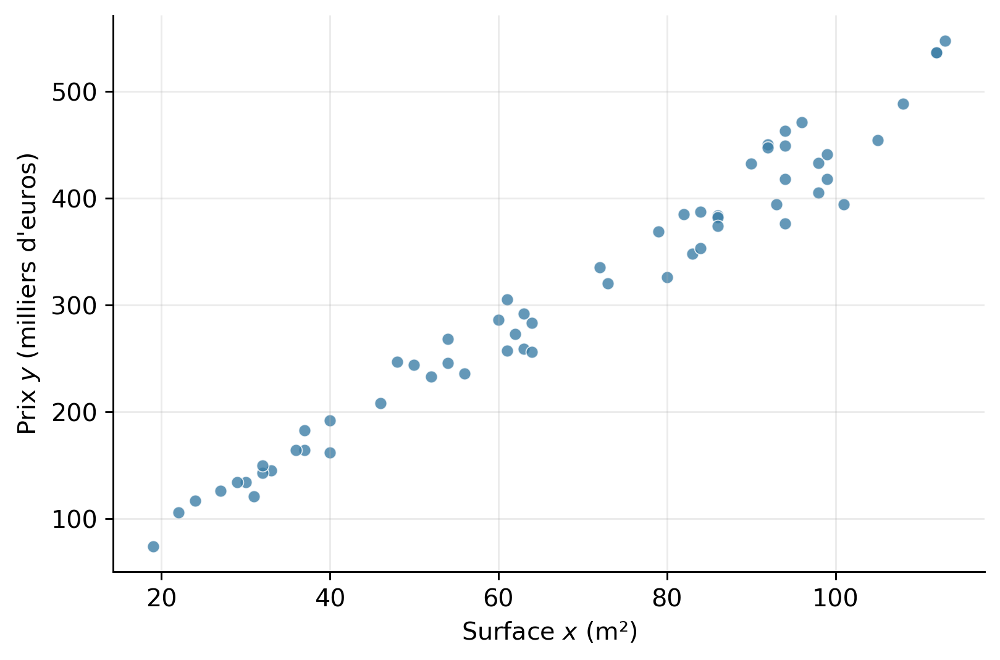
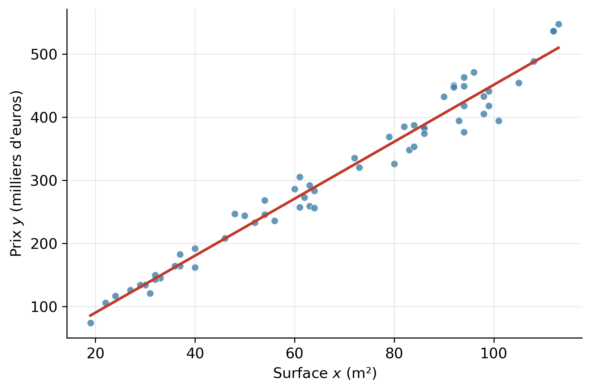
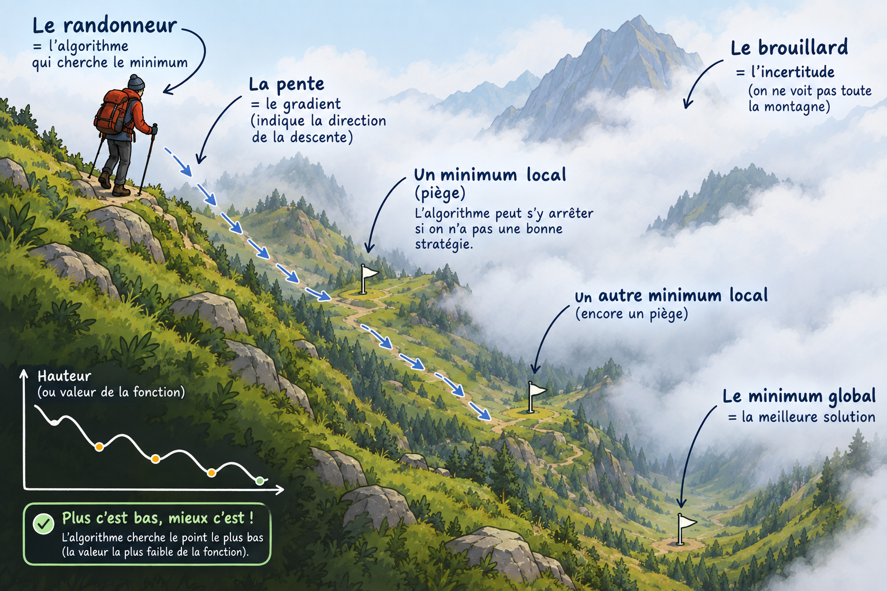
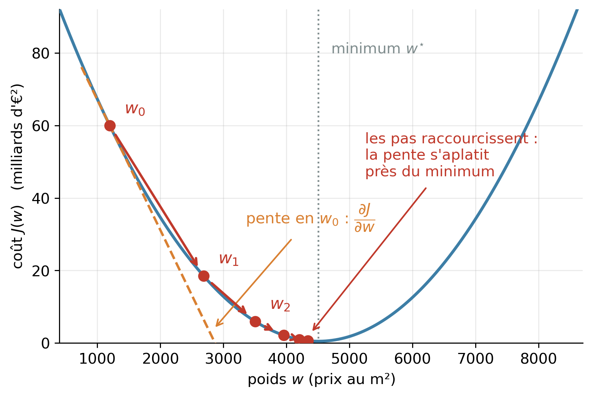

| Exemple i | Surface (m²) | Prix (€) |
|---|---|---|
| 1 | 93 | 394 000 |
| 2 | 61 | 305 000 |
| 3 | 101 | 394 000 |
| 4 | 86 | 384 000 |
| 5 | 27 | 126 000 |
CM1 - Introduction à l’apprentissage automatique (machine learning)
1 Modèle
Un modèle (model) est une fonction qui transforme une entrée en une sortie :
\[y = f(x)\]
- \(x\) est l’entrée (input),
- \(y\) est la sortie (output),
- \(f\) est le modèle : la fonction que l’on cherche.
Presque toutes les tâches d’IA s’écrivent sous cette forme. Seules changent la nature de \(x\), celle de \(y\), et la difficulté à trouver \(f\).
| Tâche | Entrée \(x\) | Sortie \(y\) |
|---|---|---|
| Filtrer le spam | le texte d’un courriel | booléen: spam/non-spam |
| Estimer un prix | les caractéristiques d’un appartement | un prix en euros |
| Reconnaître un chiffre manuscrit | une image de 28 × 28 pixels | un chiffre de 0 à 9 |
| Compléter une phrase | les mots déjà écrits | le mot suivant |
1.2 Les deux temps de la vie d’un modèle
1.2.1 L’entraînement
- On choisit d’abord une famille de modèle: la forme générale de \(f\)
- On montre à l’algorithme tous les exemples du jeu d’entraînement (training set).
- L’algorithme d’entraînement en déduit \(f\).
1.2.2 L’inférence (inference), ou prédiction.
Le modèle est figé. On lui soumet une entrée \(x\) qu’il n’a jamais vue et il répond :
\[\hat{y} = f(x)\]
La capacité à répondre juste sur des entrées nouvelles s’appelle la généralisation (generalization).
La notation ‘chapeau’ est une notation usuelle pour indiquer que \(\hat{y}\) est un estimateur, une valeur approchée. Le modèle n’a pas eu d’exemple de l’entrée \(x\).
NoteSurapprentissage (overfitting)
Un modèle qui répond parfaitement sur les exemples d’entraînements mais mal sur exemples inédits n’a pas bien “appris”. Il a juste mémorisé des exemples. Ce problème s’appelle le surapprentissage. Nous verrons plus loin comment évaluer ce problème et comment le corriger.
NoteRessources nécessaires
La phase d’entraînement consomme énormément de ressources (CPU, GPU, RAM, Disque) par rapport à la phase d’inférence.
Par exemple, Llama 3.1 a été entraîné sur un cluster de 16000 GPUs H100 pendant 54 jours. Pour l’inférence, une seule machine avec 8 GPUs H100 est suffisante pour servir plusieurs utilisateurs simultanés.
1.3 D’autres formes d’apprentissage
L’apprentissage supervisé exige des exemples avec des labels, donc un travail humain souvent coûteux. D’autres formes d’apprentissage s’en passent :
- non supervisé (unsupervised) : les exemples n’ont pas de cible, l’algorithme cherche lui-même une structure — regrouper des clients par comportement, par exemple ;
- auto-supervisé (self-supervised) : la cible est extraite des données elles-mêmes. C’est ainsi qu’on entraîne un LLM : la cible est simplement le mot suivant du texte, déjà présent dans le corpus ;
- par renforcement (reinforcement) : pas de cible, mais une récompense obtenue après une suite d’actions — jeux, robotique.
1.4 Quelques familles de modèles
| Famille | Idée | Terrain de prédilection | Exemple concret |
|---|---|---|---|
| Régression linéaire | ajuster une droite, un plan | valeurs numériques | estimer le prix d’un appartement d’après sa surface |
| Régression logistique | une frontière séparant deux classes | scoring, diagnostic | accorder ou refuser un crédit |
| Arbres de décision, forêts aléatoires | une cascade de tests « si… alors » | données tabulaires | repérer une transaction bancaire frauduleuse |
| \(k\) plus proches voisins | répondre comme les exemples les plus ressemblants | recommandation simple | suggérer un film aimé par des abonnés au profil proche |
| Machines à vecteurs de support | séparer les classes avec la marge la plus large | petits jeux de données | distinguer cellules saines et tumorales sur quelques centaines d’échantillons |
| Réseaux de neurones | empiler des transformations simples | image, texte, audio, LLM | reconnaître un panneau de signalisation, traduire un texte, ChatGPT |
2 Régression linéaire
2.1 Etude de cas : prix d’un appartement
Nous voulons construire un modèle qui estime le prix d’un appartement à Bordeaux.
2.1.1 Choisir l’entrée
Un appartement possède de nombreuses caractéristiques (features) qui influencent son prix : surface, localisation, nombre de pièces, étage, étiquette DPE, année de construction…
Pour commencer, nous n’en utiliserons qu’une seule, qui est la plus déterminante : la surface.
| Signification | Unité | |
|---|---|---|
| \(x\) | surface habitable | m² |
| \(y\) | prix de vente | € |
| \(f\) | le modèle à construire | — |
2.1.2 Collecter les exemples
Entraîner ce modèle suppose d’abord d’observer un maximum de ventes réelles. Chaque exemple \(i\) est une paire \(\left(x^{(i)}, y^{(i)}\right)\) : une surface constatée et le prix de vente correspondant.
En reportant les \(N = 60\) ventes sur un graphique — la surface en abscisse, le prix en ordonnée — chaque exemple devient un point.

Les points ne sont pas alignés parfaitement, mais leur tendance est nette : le prix monte à peu près proportionnellement à la surface.
Construire le modèle consiste à faire passer une fonction \(f\) au milieu de ce nuage de points.
AstuceQuestion — quelles limites voyez-vous déjà ?
- Une seule caractéristique. Deux appartements de 60 m², l’un aux Chartrons, l’autre en périphérie, n’ont pas le même prix. Le modèle leur donnera pourtant la même réponse.
- La dispersion. À surface égale, les prix observés varient de plusieurs dizaines de milliers d’euros. Aucune fonction de \(x\) seul ne peut passer par tous les points : le modèle sera nécessairement approché.
- L’extrapolation. Le jeu de données s’arrête à 115 m². Interrogé sur un 300 m², le modèle répondra quand même — sans aucune raison d’avoir raison.
2.2 Transformation linéaire
Le modèle le plus simple serait de tracer une droite qui essaie de se rapprocher au plus près des exemples.

Une telle droite a une équation \[f(x) = wx + b\]
La formule \(wx + b\) est une transformation linéaire.
Pour ce type de modèle, les seules inconnues sont \(w\) et \(b\). Ce sont des paramètres de notre modèle.
- \(w\) est appelé poids (weight),
- \(b\) est le biais (bias).
2.2.1 Comment trouver ces 2 paramètres ?
Plusieurs techniques sont possibles :
- visuellement
- au hasard, en tâtonnant avec plusieurs valeurs
- avec une méthode analytique
- on résout une équation et on obtient une valeur exacte
- avec une méthode itérative : l’algorithme de la descente de gradient (voir ci-dessous)
Une régression linéaire consiste à trouver les meilleurs paramètres \(w\) et \(b\).
3 Fonction de perte (loss function)
Dans tous les cas, il nous faut un moyen de juger si nos paramètres sont bons. Pour cela, nous allons calculer une perte (loss) pour chaque exemple i.
\[L^{(i)} = L\left(\hat{y}^{(i)},\ y^{(i)}\right)\]
- \(\hat{y}^{(i)} = f\left(x^{(i)}\right)\) est la prédiction du modèle pour l’exemple \(i\).
- \(\hat{y}{(i)}\) est la cible (ou étiquette) pour l’exemple \(i\).
- \(L\) est la fonction de perte.
La perte mesure l’écart entre ce que le modèle prédit et la cible (la valeur qu’il aurait dû répondre). La perte est une valeur décimale positive. Le but de l’entraînement est d’amener cette perte aussi proche de 0 que possible.
Il existe différentes fonctions de perte, adaptées à chaque famille de modèle. Pour notre modèle en transformation linéaire, nous utiliserons la formule :
\[L\left(\hat{y}^{(i)},\ y^{(i)}\right) = \left(\hat{y}^{(i)} - y^{(i)}\right)^2\]
3.1 Fonction de coût (cost function)
Pour trouver les meilleurs paramètres pour notre modèle, il nous faut donc trouver les paramètres pour lesquel la perte est minimale, mais en considérant tous les exemples. Nous allons utiliser pour cela une fonction de coût (cost function).
\[J = J(w, b\,;\, X, Y)\]
\(X\) désigne l’ensemble des données d’exemple en entrée
\(Y\) désigne l’ensemble des données d’exemple en sortie
Les meilleurs paramètres \(w\) et \(b\) seront ceux pour lesquels \(J\) est le plus petit.
Pour notre modèle en transformation linéaire, nous pouvons faire la moyenne des pertes sur tous les exemples. Voici la formule : \[ \begin{aligned} J(w, b\,;\, X, Y) &= \frac{1}{N} \sum_{i=1}^{N} L\left(\hat{y}^{(i)},\ y^{(i)}\right) \\ &= \frac{1}{N} \sum_{i=1}^{N} \left(\hat{y}^{(i)} - y^{(i)}\right)^2 \end{aligned} \]
La formule ci-dessus s’appelle l’erreur quadratique moyenne (mean square error - MSE).
La notation suivante généralise le principe à toutes les familles de modèles :
\(\theta\) : ensemble des paramètres du modèle (dans notre cas, \(w\) et \(b\)).
Les meilleurs paramètres \(\theta\) sont ceux pour lesquels le coût \(J(\theta)\) est le plus proche de 0.
Note
D’autres fonctions de perte et de coût peuvent être utilisées selon la famille de modèle et selon le problème à modéliser.
Certains auteurs utilisent les termes perte/coût (cost/loss) comme synonymes. Nous utiliserons le terme perte pour un seul exemple, et le terme coût pour désigner l’agrégation de la perte sur un dataset.
3.2 Lire le coût : la RMSE
Notre coût \(J\) est une moyenne de carrés d’euros : il s’exprime donc en €². C’est une unité difficile à interpréter.
Il suffit d’en prendre la racine carrée pour revenir en euros :
\[\mathrm{RMSE} = \sqrt{J} = \sqrt{\frac{1}{N} \sum_{i=1}^{N} \left(\hat{y}^{(i)} - y^{(i)}\right)^2}\]
RMSE = Root Mean Square Error, donc la racine carrée de la MSE.
| Modèle | Coût J MSE (€²) | RMSE (€) |
|---|---|---|
| droite ajustée (w = 4 509, b = 162) | 4.94e+08 | 22 222 |
| trop plat (w = 3 000, b = 0) | 1.29e+10 | 113 512 |
| trop pentu (w = 6 000, b = 0) | 1.25e+10 | 111 941 |
La RMSE donne l’ordre de grandeur de l’erreur du modèle, dans l’unité de la sortie. Ici : environ 22 000 € d’écart typique, pour un prix moyen de 309 000 € — soit 7 %. On peut enfin juger le modèle.
NoteNotes
- La RMSE sert à lire le coût, pas à l’optimiser. Comme la racine carrée est croissante, minimiser \(J\) ou minimiser la RMSE revient exactement au même. Cependant, \(J\) se dérive bien plus simplement, et c’est donc \(J\) que l’algorithme de la descente de gradient va chercher à minimiser.
- La RMSE n’est pas la moyenne des erreurs : elle est toujours plus grande, parce que le carré donne plus de poids aux grosses erreurs. Ici, l’erreur moyenne en valeur absolue n’est que de 17 600 €.
4 TP régression linéaire
Voir TP1.
5 Descente de gradient (gradient descent)
L’approche par tâtonnement n’est pas satisfaisante :
- nous ne sommes pas certains de trouver les meilleurs paramètres (convergence),
- elle n’est pas efficace (lente)
- elle serait impraticable au delà de 2-3 paramètres.
5.1 Analogie avec le randonneur dans le brouillard
Imaginez que votre avion s’est écrasé sur une montagne inconnue, dans un brouillard épais. Vous cherchez à atteindre le fond de la vallée à pied. Vous pouvez :
- modifier vos paramètres de position (latitude, longitude)
- en faisant des pas (step) plus ou moins grands
- sentir la pente = le gradient sous vos pieds
- mesurer votre altitude.
Comment faire pour trouver le point le plus bas ?
- Votre point de départ est aléatoire.
- Mesurer l’altitude à ce point
- Sentir la direction de pente. Par exemple, on sent qu’elle descend vers le sud-ouest
- Faire un pas vers là où la pente descend. Vous faites un plus petit pas si la pente est faible.
- Mesurer la nouvelle altitude
- S’arrêter lorsque l’altitude ne change presque plus, sinon goto 3

NoteTaille du pas
Si le pas est trop grand, vous risquez de rater le point le plus bas. Vous risquez également de diverger, c’est-à-dire de monter de plus en plus, au lieu de descendre. Imaginez un géant qui passe d’une montagne à l’autre à chaque pas.
Si le pas est trop petit, cela va prendre beaucoup de temps.
5.2 Application sur une régression linéaire
| Randonneur | Descente de gradient |
|---|---|
| Position du randonneur | paramètres \(w\) et \(b\) |
| altitude | coût \(J(w, b)\) |
| pente | gradient : dérivée partielle de la fonction de coût pour chaque paramètre |
| taille de pas | \(\alpha\) : taux d’apprentissage (learning rate) |
| nombre de pas | époque (epoch): un passage complet sur tout le dataset d’entraînement |
L’algorithme devient :
- Choisir \(w\) et \(b\) au hasard.
epoch = 0 - Calculer \(J(w,b)\)
- Calculer \(\frac{\partial J}{\partial w}\) et \(\frac{\partial J}{\partial b}\)
- Ajuster \(w = w - α \frac{\partial J}{\partial w}\) et \(b = b - α \frac{\partial J}{\partial b}\)
- Calculer \(J(w,b)\)
- S’arrêter lorsque \(J(w, b)\) ne change presque plus : c’est la convergence.
- Sinon :
epoch += 1et goto 3
- Sinon :
5.2.1 Illustration
Le coût dépend de 2 paramètres, et sa représentation graphique serait en 3 dimensions \((w, b, J)\), ce qui serait plus difficile à visualiser.
Simplifions le problème : figeons \(b\) à sa meilleure valeur et ne faisons varier que \(w\). Le coût ne dépend plus que d’un seul paramètre, et le paysage du randonneur se réduit à une courbe.

On part de \(w_0 = 1200\) €/m², une valeur tirée au hasard et très éloignée de la meilleur valeur.
- En \(w_0\), la tangente (en orange) est très inclinée : le modèle est mauvais, et \(\frac{\partial J}{\partial w}\) est grand.
- Comme le pas vaut \(\alpha \frac{\partial J}{\partial w}\), ce premier pas est grand : on avance vite.
- La pente est négative, donc \(w - \alpha \frac{\partial J}{\partial w}\) augmente \(w\) : l’algorithme part spontanément du bon côté.
- À chaque epoch la pente s’aplatit, donc les pas raccourcissent. L’algorithme ralentit tout seul en approchant du minimum.
NoteUn seul minimum
La courbe est une parabole : elle n’a qu’un seul creux. C’est une propriété de notre fonction de coût appliquée à une transformation linéaire. Cela fonctionne aussi avec 2 paramètres \(w\) et \(b\).
Contrairement au randonneur, notre algorithme ne risque donc pas de se retrouver piégé dans une vallée secondaire. Mais avec les réseaux de neurones le paysage sera plus accidenté.
NoteComment calculer les dérivées partielles ?
Pour une régression linéaire, on les obtient avec les règles de dérivation vues en terminale. Elles se calculent en trois lignes :
\[\frac{\partial J}{\partial w} = \frac{2}{N} \sum_{i=1}^{N} \left(w x^{(i)} + b - y^{(i)}\right) x^{(i)} \qquad \frac{\partial J}{\partial b} = \frac{2}{N} \sum_{i=1}^{N} \left(w x^{(i)} + b - y^{(i)}\right)\]
La démonstration complète est dans le fichier justification_mathematique.md du TP.
Mais cette approche ne passe pas l’échelle : un réseau de neurones compte des millions de paramètres, et il faudrait tout redériver à la main à chaque changement de modèle.
En pratique, nous utiliserons la bibliothèque PyTorch, qui :
- enregistre chaque opération effectuée pour calculer \(J(\theta)\), dans un graphe de calcul (computational graph) ;
- remonte ce graphe à l’envers en appliquant la règle de dérivation en chaîne (chain rule) à chaque opération élémentaire, dont il connaît la dérivée.
Ce parcours en sens inverse s’appelle la rétropropagation (backpropagation). PyTorch ne manipule aucune formule : il enchaîne des dérivées élémentaires sur des valeurs numériques. C’est ce qui lui permet de dériver n’importe quel modèle, aussi compliqué soit-il.
5.2.2 Activité
6 TP descente de gradient
Voir TP1.
- Dans le projet tp1_ml, ouvrez le notebook
tp1b_gradient_descent.ipynb - Suivez les instructions
1.1 Comment une machine peut-elle « apprendre » ?
Apprendre, pour une machine, c’est construire la fonction \(f\) (le modèle) à partir d’exemples.
En programmation classique, c’est le développeur qui écrit \(f\) : il connaît les règles du problème et les traduit en code.
En apprentissage automatique, on n’écrit pas f. On écrit un algorithme d’entraînement (training) qui construit \(f\) à partir d’exemples.
1.1.1 Apprentissage supervisé
Lorsque les exemples fournissent à la fois une entrée et la sortie attendue, on parle d’apprentissage supervisé (supervised learning).
Un dataset de \(N\) exemples est alors un ensemble de \(N\) paires :
\[\mathcal{D} = \left\{\, \left(x^{(i)},\ y^{(i)}\right) \,\right\}_{i=1}^{N}\]
Chaque entrée \(x^{(i)}\) est associée à sa sortie cible (target) \(y^{(i)}\), aussi appelée étiquette (label).
L’exposant entre parenthèses est un numéro d’exemple, pas une puissance : \(x^{(3)}\) est le troisième exemple du dataset.
L’indice en bas désignera plus tard une caractéristique : \(x_2\) est la deuxième caractéristique.
Les deux se combinent : \(x_2^{(3)}\) est la deuxième caractéristique du troisième exemple.